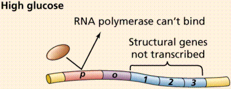
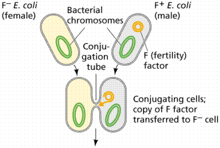

The chromosome of E. coli | The operon model | Viruses | Plasmids | The eukaryotic chromosome
Replication of the eukaryotic chromosome | Regulation of eukaryotic gene expression
Types of chromatin | The eukaryotic genome | Transcription and processing of mRNA
Antibody-coding genes | Viruses and eukaryotes | Eukaryotic transposons
Genes, viruses and cancer | Links
While the period from 1900 to the second world war has been called the "golden age of genetics", we may be in a new golden (or platinum) age. Recombinant DNA technology allows us to manipulate the very DNA of living organisms and to make conscious changes in that DNA. Prokaryote genetic systems are much easier to study and better understood than are eukaryote systems.
The single chromosome of the common intestinal bacterium E. coli is circular and contains some 4.7 million base pairs. It is nearly 1 mm long, but only 2nm wide. The chromosome replicates in a bidirectional method, producing a figure resembling the Greek letter theta. The promoter is the part of the DNA to which the RNA polymerase binds before opening the segment of the DNA to be transcribed.
Partial gene map of the operons, such as trp and lac, on a bacterial chromosome. Image from Purves et al., Life: The Science of Biology, 4th Edition, by Sinauer Associates (www.sinauer.com) and WH Freeman (www.whfreeman.com), used with permission.
A segment of the DNA that codes for a specific polypeptide is known as a structural gene. These often occur together on a bacterial chromosome. The location of the polypeptides, which may be enzymes involved in a biochemical pathway, for example, allows for quick, efficient transcription of the mRNAs. Often leader and trailer sequences, which are not translated, occur at the beginning and end of the region. E. coli can synthesize 1700 enzymes. Therefore, this small bacterium has the genes for 1700 different mRNAs.
Lactose, milk sugar, is split by the enzyme b-galactosidase. This enzyme is inducible, since it occurs in large quantities only when lactose, the substrate on which it operates, is present. Conversely, the enzymes for the amino acid tryptophan are produced continuously in growing cells unless tryptophan is present. If tryptophan is present the production of tryptophan-synthesizing enzymes is repressed.
The operon model of prokaryotic gene regulation was proposed by Fancois Jacob and Jacques Monod. Groups of genes coding for related proteins are arranged in units known as operons. An operon consists of an operator, promoter, regulator, and structural genes. The regulator gene codes for a repressor protein that binds to the operator, obstructing the promoter (thus, transcription) of the structural genes. The regulator does not have to be adjacent to other genes in the operon. If the repressor protein is removed, transcription may occur.
The structure and operation of an operon. Images from Purves et al., Life: The Science of Biology, 4th Edition, by Sinauer Associates (www.sinauer.com) and WH Freeman (www.whfreeman.com), used with permission.
Operons are either inducible or repressible according to the control mechanism. Seventy-five different operons controlling 250 structural genes have been identified for E. coli. Both repression and induction are examples of negative control since the repressor proteins turn off transcription.


Functioning of several operons. Images from Purves et al., Life: The Science of Biology, 4th Edition, by Sinauer Associates (www.sinauer.com) and WH Freeman (www.whfreeman.com), used with permission.
Plasmids, small DNA fragments, are known from almost all bacterial cells. Plasmids carry between 2 and 30 genes. Some seem to have the ability to move in and out of the bacterial chromosome.
An episome is a plasmid incorporated in the bacterial chromosome. Plasmids are self-replicating in a manner like the bacterial chromosome. Many plasmids have been recognized for E. coli, including the F plasmids ("sex factors") and R plasmids (drug/antibiotic resistance). The F plasmid contains 25 genes, some of which control the production of F pili (proteins which extend from the surface of F+, or male, cells to the surface of F-, or female, cells).

Conjugation and exchange of genetic material in bacteria. Images from Purves et al., Life: The Science of Biology, 4th Edition, by Sinauer Associates (www.sinauer.com) and WH Freeman (www.whfreeman.com), used with permission.
The R plasmid conveys drug resistance on cells having it. As many as 10 resistance genes can be contained on a single R plasmid. The R plasmids can be transferred to other bacteria of the same species, to viruses, and even to bacteria of different species. Drug (antibiotic) resistance has been found among pathogens causing the diseases typhoid fever, gastroenteritus, plague, undulant fever, meningitis, and gonorrhea. In addition to the more common modes of transfer, R plasmids may be passed through the cell membrane. The resistance genes appear to operate by either breaking down the antibiotics or by circumventing the block the antibiotic places on a key bacterial metabolic pathway.
Viruses consist of a nucleic acid (DNA or RNA) enclosed in a protein coat (known as a capsid). The capsid may be a single protein repeated over and over, as in tobacco mosaic virus (TMV). It may also be several different proteins, as in the T-even bacteriophages.
Once inside the cell, the nucleic acid follows one of two paths: lytic or lysogenic.


The lytic and lysogenic phases of a viral replication cycle. Images from Purves et al., Life: The Science of Biology, 4th Edition, by Sinauer Associates (www.sinauer.com) and WH Freeman (www.whfreeman.com), used with permission.
Retroviruses, such as Human Immunodifficiency Virus (HIV), also include the enzyme reverse transcriptase with the viral RNA. Reverse transcriptase makes a single-stranded viral DNA copy of the single-stranded viral RNA. The single stranded viral DNA is subsequently turned into a double-stranded DNA. The lytic cycle occurs when the viral DNA immediately takes over the host cell (remember that viruses are obligate intracellular parasites) and begins making new viruses. Eventually the new viruses cause the rupture (or lysis) of the cell, releasing those new viruses to continue the infection cycle. The lysogenic cycle occurs when the viral DNA is incorporated into the host DNA as a prophage. When the cell replicates the prophage is passed along as if it were host DNA. Sometimes the prophage can emerge from the host chromosome and enter the lytic cycle spontaneously once every 10,000 cell divisions. Ultraviolet light and x-rays may also trigger emergence of the prophage.
Transduction is the transfer of host DNA from one cell to another by a virus. Some bacteriophages are temperate since they tend to go lysogenic rather than lytic. These types of viruses are able to transduce fragments of the host DNA.
Induction of transduction by viruses in bacteria. Images from Purves et al., Life: The Science of Biology, 4th Edition, by Sinauer Associates (www.sinauer.com) and WH Freeman (www.whfreeman.com), used with permission.
Transposons are DNA fragments incorporated into the chromosomal DNA. Unlike episomes and prophages, transposons contain a gene producing an enzyme that catalyzes insertion of the transposon at a new site. They also have repeated sequences 20-40 nucleotides in length at each end. Insertion sequences are short (600-1500 base pairs long) simple transposons that do not carry genes beyond those essential for insertion of the transposon into E. coli. Complex transposons are much larger and carry additional genes. Genes incorporated in a complex transposon are known as jumping genes since they can move about on the chromosome (even from chromosome to chromosome). Often the complex transposons are flanked by simple transposons.
Transposons and their relationship to other genes. Image from Purves et al., Life: The Science of Biology, 4th Edition, by Sinauer Associates (www.sinauer.com) and WH Freeman (www.whfreeman.com), used with permission.
The eukaryotic chromosome consists of DNA and proteins that appear to play a major role in regulation of eukaryote genes. The DNA of each chromosome is a long single molecule of double stranded DNA. Eukaryotic DNA comes in two forms. Chromatin is the uncoiled form of DNA and is over 50% protein. Chromosomes are coiled DNA/protein that form during the early stages of cell division.
The proteins associated with DNA are collectively known as histones. They are relatively short polypeptides which are positively charged (basic) and thus are attracted to the negatively charged (acidic) DNA. Histones are synthesized in quantity during the S-phase of the cell cycle. One function of theses proteins seems to be the folding and packaging of DNA into chromosome form: the 2 m of DNA in a human cell are packaged into 46 chromosomes with a combined length of 200nm (a nm remember is 10-6m). Some 90 million molecules of histones occur in a single cell, with the majority (30 million) being H1 histones. Five types of histone are known (H1, H2A, H2B, H3, and H4); with the exception of H1 most eukaryote histones are very similar.
A nucleosome is the fundamental packing unit of eukaryotic DNA. The core consists of two molecules each of H2A, H2B, H3, and H4; around which the DNA is wound twice. The H1 histone is outside the core. Between 150-200 nucleotide pairs are associated with the core and linker DNA. This level of packing is known as "beads on a string".
The next level are known as the 30nm strand, whose details of organization are not yet well known. 30 nm strands are further condensed into 300nm wide looped domains. Looped domains are part of condensed sections of chromosomes (the chromosome being 1400nm wide at Metaphase I).

The above images are from the University of Illinois' DNA and Protein Synthesis site.
Nucleotide triphosphates (in the forms ATP, GTP, CTP and TTP) are assembled according to the semi-conservative model. Other details of DNA replication are consistent with what we know for prokaryotes. Eukaryotic DNA has many replication forks and also bidirectional synthesis, contrasting to the unidirectional rolling theta prokaryotic method. Eukaryotic DNA is synthesized much slower than prokaryotic DNA, in humans 50 nucleotides per second per replication fork. After replication the new DNA is immediately associated with histones.

Replication fork and its growth in a eukaryote. Images from Purves et al., Life: The Science of Biology, 4th Edition, by Sinauer Associates (www.sinauer.com) and WH Freeman (www.whfreeman.com), used with permission.
Eukaryotic gene regulation, especially in multicellular organisms, is complicated by the process of development unique to multicellular organisms. Each multicellular organism begins as a single-celled zygote which divides by mitosis. Cells differentiate into functional types by using some genes but ignoring others. Homeobox genes establish the body plan and position of organs in response to gradients of regulatory molecules. The timing of certain gene expressions seems to follow a sequence, such as the production of different types of fetal hemoglobins by mammalian red blood cells, which switch to adult hemoglobin sometime after birth. Clearly the inactivation of certain genes occurs in every adult cell; therein lies the cure for cancer, old age, etc.
Heterochromatin stains more strongly and is a more condensed chromatin. Euchromatin stains weakly and is more open (less condensed). Euchromatin remains dispersed (uncondensed) during Interphase, when RNA transcription occurs. Some regions of heterochromatin appear to be structural (as in the heterochromatin near the centromere region). Barr bodies, irreversibly inactivated X-chromosomes, are also condensed heterochromatin. Other heterochromatin regions vary from cell to cell. As the cell differentiates, the proportion of heterochromatin to euchromatin increases, reflecting increased specialization of the cell as it matures. Loops (or puffs) in insect chromosomes are areas of active RNA synthesis, suggesting again the functional genes are located in open areas of the chromatin (or, the euchromatin). Eukaryotes also have specific binding proteins working in a similar fashion to prokaryotic mechanisms, however the eukaryotes, as one would expect, have a much more complicated process.
We use the term genome to refer to all of the alleles possessed by an organism (or by a population, species, or larger taxonomic group). While the amount of DNA for a diploid cell is constant within a species, the differences can be great between species. Humans have 3.5 X 109 base pairs, Drosophila has 1.5 X 108, toads have 3.32 X 109, and salamanders have 8 X 1010 base pairs per haploid genome. Much of the DNA in each cell either has no function or has a function not yet known. Eukaryotes have only 10% of their DNA coding for proteins. Humans may have a little as 1% coding for proteins. Viruses and prokaryotes use a great deal more of their DNA.
Almost half the DNA in eukaryotic cells is repeated nucleotide sequences. Protein-coding sequences are interrupted by non-coding regions. Non-coding interruptions are known as intervening sequences or introns. Coding sequences that are expressed are exons.
Introns and exons. Images from Purves et al., Life: The Science of Biology, 4th Edition, by Sinauer Associates (www.sinauer.com) and WH Freeman (www.whfreeman.com), used with permission.
Most, but not all structural eukaryote genes contain introns. Although transcribed, these introns are excised (cut out) before translation (a seemingly energy inefficient process). The number of introns varies with the particular gene, even occurring in tRNAs, rRNAs and viral genes! Generally the more complex and recently evolved the organism, the more numerous and larger the introns. Which came first: continuous genes lacking introns or interrupted genes containing introns? Introns have been hypothesized to promote genetic recombination (via crossing-over), thus speeding up the evolution of new proteins. Exons are also thought to code for different functional regions of proteins.
The above images are from McGill University's Genetics Pages (http://www.mcgill.ca/nrs/regenk_i.htm).
Gene families are made up of similar, but not identical, genes. The globin family is the best studied gene family. Hemoglobin consists, in humans, of 2 a-chains and 2 b-chains clustered about a common heme. Human beta-globin genes are scattered at five loci on human chromosome 11. These genes are expressed sequentially during development, and are similar with same-length introns in similar positions in each gene. Some of the genes are inactivated copies, others are functional only during certain phases of development. The actin family of genes also exhibits a similar pattern.
The process of transcription in eukaryotes is similar to that in prokaryotes, although there are some differences. Eukaryote genes are not grouped in operons as are prokaryote genes. Each eukaryote gene is transcribed separately, with separate transcriptional controls on each gene. Whereas prokaryotes have one type of RNA polymerase for all types of RNA, eukaryotes have a separate RNA polymerase for each type of RNA. One enzyme for mRNA-coding genes such as structural proteins. One enzyme for large rRNAs. A third enzyme for smaller rRNAs and tRNAs.
Prokaryote translation begins even before transcription has finished, while eukaryotes have the two processes separated in time and location (remember the nuclear envelope). After eukaryotes transcribe an RNA, the RNA transcript is extensively modified before export to the cytoplasm. A cap of 7-methylguanine (a series of an unusual base) is added to the 5' end of the mRNA; this cap is essential for binding the mRNA to the ribosome. A string of adenines (as many as 200 nucleotides known as poly-A) is added to the 3' end of the mRNA after transcription. The function of a poly-A tail is not known, but it can be used to capture mRNAs for study. Introns are cut out of the message and the exons are spliced together before the mRNA leaves the nucleus. There are several examples of identical messages being processed by different methods, often turning introns into exons and vice-versa. Protein molecules are attached to mRNAs that are exported, forming ribonucleoprotein particles (mRNPs) which may help in transport through the nuclear pores and also in attaching to ribosomes.
Antibodies are globular complex proteins made by multicellular individuals in response to a specific antigen (a foreign substance that has labels saying "I am a stranger"). The cells making antibodies are lymphocytes, better known as white blood cells. Antibodies immobilize and destroy their specific antigens. A mouse can make 10,000,000 antibodies, more than the total genes of the mouse would suggest. Antibody proteins are composed of two long and two short chains. Each species has a constant region characteristic for the species and type of antibody. The other region is the variable in which antigen-specific amino-acids are located.
Susumu Tonegawa tested (and proved) an old hypothesis that the constant and variable regions of antibodies were coded for by different genes. Tonegawa's work further demonstrated that gene fragments in embryos are rearranged to form the variable (functional) genes.
The viruses of eukaryotes are similar to prokaryote-infecting viruses. Proviruses are viral DNA integrated into the host cell. Some of the DNA viruses can either initiate an infection (lytic in prokaryotes) cycle or can form proviruses. Simian Virus 40 (SV40) causes cancer in hamsters but not in its normal hosts. SV40 can introduce new functional genes into the host DNA, as can a number of other viruses.
Retroviruses can also insert their nucleic acid into host DNA via the reverse transcriptase mode mentioned previously. Reverse transcriptase is carried with the RNA into the host cell. In the process of making the cDNA strand for the viral RNA, the enzyme also makes long terminal repeats (LTRs) sequences at the terminal ends of the cDNA. These LTRs may also make insertion of the viral DNA into the host DNA easier. The inserted viral DNA makes RNA transcripts which are packaged with viral protein coats and reverse transcriptase.
The viral DNA may, depending on its insertion point, cause mutations of the host DNA. Most viral DNA insertions do not damage the host, but rather become part of the host genome and can be passed on if they have managed to infect a germ-line cell. From 0.5 to 1.0% of mouse DNA may be of viral origin.
Eukaryotic transposons resemble prokaryotic transposons in many features. Many eukaryotic transposons are first copied to RNA and then back to DNA before being inserted in a new location.
Cancer is a disease in which cells escape the restraints on normal cell growth. Cancer is an inheritable disease (at least from cell to daughter cells). Once a cell has become cancerous, all of its descendant cells are cancerous. Gross chromosomal abnormalities are often visible in cancerous cells. Most carcinogens (cancer-generating factors) are also mutagens (mutation-generating factors). Oncogenes are genes resembling normal genes but in which something has gone wrong, resulting in a cancer. Fifty oncogenes have thus far (1992) been discovered.
Viruses seem able to cause cancer in three ways. Presence of the viral DNA may disrupt normal host DNA functions. Viral proteins needed for virus replication may also affect normal host gene regulation. Since most cancer-causing viruses are retroviruses, the virus may serve as a vector for oncogene insertion. Transfers of genes between eukaryotic cells will allow doctors, who have historically been limited to phenotypic cures, to attack disease at the genotypic level. SV40 virus has been used to inject the rabbit beta-globin gene into monkeys. Viruses can thus serve as a possible vector to place healthy (non-mutated) alleles into eggs.
Email: mj.farabee@emcmail.maricopa.edu
Last modified:
The URL of this page is: